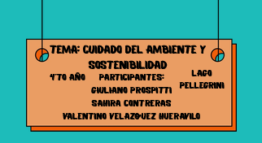

¿No te molesta la basura a tu alrededor?
Cada vez que vas por la ruta o caminas por las bardas siempre te encontrás con basura. En este artículo vamos a investigar sus causas, sus consecuencias y qué podemos hacer con este problema.
Si querés cambiar esta realidad, a continuación te dejamos tips para mejorar nuestro ambiente.

¿De dónde viene la basura?
La basura corresponde a los camiones que llevan cargas volátiles que viajan descubiertos: con el viento que genera la velocidad, los residuos quedan en las banquinas o en los arbustos de la ruta.
A veces las personas que circulan por la ruta van tirando residuos por las ventanillas, y eso hace que con el viento se acumulen en los arbustos o en las jarillas.
Por la ruta se encuentra un basural donde la gente va a dejar sus residuos en camiones o camionetas, y mientras viajan algunos se van perdiendo en el camino.
La quema de basura
Otro factor contaminante es la quema y el humo de la basura. La quema puede extenderse por la zona y eso lleva a un gran problema del campo; el humo puede ser más o menos contaminante según la basura que se quema.
¿Querés cambiar esta realidad?
- Clasificar la basura en casa: orgánicos (podemos hacer compost), plásticos (juntar todo el nylon en una botella), vidrios y papeles para reciclar.
- Asegurarse de que, al transportar la basura, no se vuele nada.
- Tirar la basura donde corresponde.
- Hacer campañas de concientización social.
